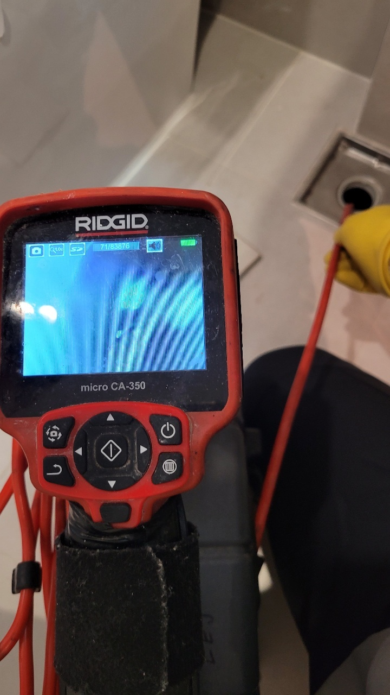
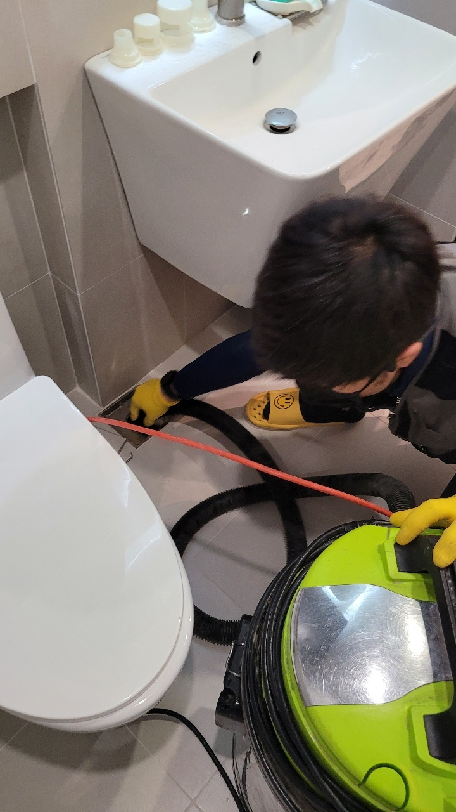
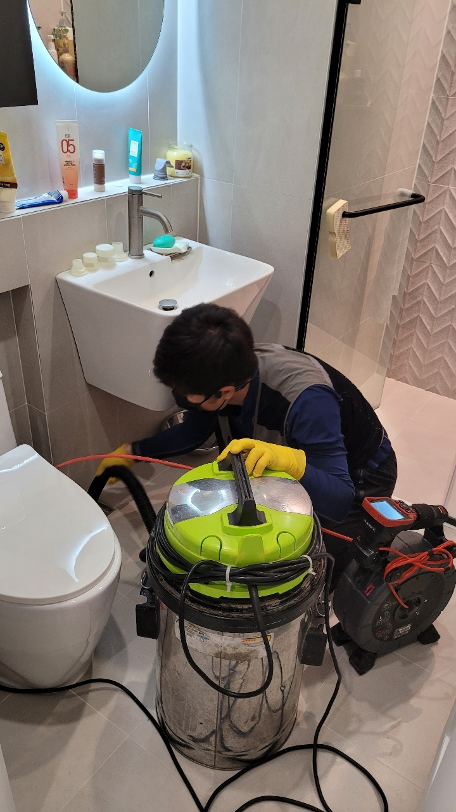
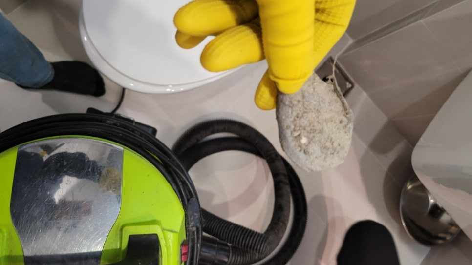

🏠 권선구 욕실하수구막힘 호매실동 오목천동 완벽하게 마무리한 현장!
수원 하수구막힘 전문 시공 후기

📋 작업 개요
- 위치: 수원
- 서비스 유형: 하수구막힘, 배관막힘, 배관청소, 고압세척
- 작업 일시: 2022. 11. 8. 10:18
- 업체명: 하수구수사대 (010-5615-2118)
🔍 문제 상황
안녕하세요. 하수구수사대입니다.
하수구막힘은 어느날 갑자기 누구에게나 올 수 있는 상황인데요.
어느날 건물의 메인 배관이 막히게 되면 아주 깊은 곳에서부터 냄새가 올라오기 시작하기 때문에 더욱 힘들어질 수 있습니다. 그리고 이러한 현상은 우리가 일상을 보내고 있는 실내에서도 항상 동일하게 발생을 할 수 있는 것입니다.
이러한 하수구막힘 현상을 해결을 하기 위해서는 혼자서 해결을 하는 것보다는 바로 전문가에게 의뢰를 해서 정확한 원인을 찾아서 점검을 받고 해결을 하는 것이 가장 중요한 것이라고 할 수 있습니다.

🔎 원인 분석
💡 전문가 진단: 하수구막힘은 어느날 갑자기 누구에게나 올 수 있는 상황인데요.
하수구막힘은 정확한 원인을 찾아서 해결을 하는 과정이 가장 중요하다고 할 수 있습니다.
오늘 말씀드릴 현장은 권선구 욕실하수구막힘 호매실동 오목천동 하수구막힘으로 인해서 의뢰를 해주신 곳이었습니다. 이번 사례를 통해서 혹시나 비슷한 현상을 겪고 계시는 분이 있다면 참고를 하시길 바랍니다.
요즘은 단독주택이 아니고서야 대부분의 분들이 여러 세대가 공동으로 거주를 하고 있는 오피스텔이나 아파트와 같은 형태에 거주를 하시는 분들이 많이 있습니다. 이러한 형태의 건물의 특징은 바로 대부분의 공동 세대들은 배관을 공동으로 사용하고 있다는 것입니다.
경기도 수원시 권선구 매송고색로533번길 7 상가동 B층 01호 298

🔧 작업 과정
이러한 이유로 세대의 메인 배관이 막히게 되면 여러 세대가 동시에 많은 불편함을 경험할 수 있게 되는 것인데요.
메인 배관의 막힘이 발생하게 되면 여러 세대가 동시에 불편함을 겪게 되기 때문에 무엇보다도 신속하게 해결을 하는 것이 중요하다고 할 수 있습니다. 특히 권선구 욕실하수구막힘 호매실동 오목천동 이번 현장의 경우는 1층부터 3층까지는 상가로 운영이 되는 건물이었기 때문에 많은 사람들이 이용에 불편을 겪을 수 있는 상황이었습니다.
그래서 먼저 공동 세대의 메인 배관을 살펴보기로 하였는데요 배관 내시경을 통해서 배관을 내부를 살펴본 결과 식당에서 발생한 여러 가지의 음식물 찌꺼기와 함께 여러 세대에서 발생한 이물질들이 종합적으로 쌓이게 되면서 이러한 막힘이 발생하게 된 것이었습니다.
특히 1층에 위치해 있는 식당 같은 경우에는
정상적으로 영업을 하지 못하는 상황이었기 때문에 그만큼 손실도 크게 발생하고 있는 상황이었습니다. 하수구에서 악취가 올라오는 것은 이미 오래전부터 발생하고 있었다고 하는데요 이러한 전조증상을 그대로 두게 되었을 경우에는 결국 이렇게 막힘이 발생할 수 있는 것입니다.
고객님께서는 악취가 올라올 때 배수구 자체에 문제가 생긴 것으로 알고 청소를 하거나 약품을 뿌려보기도 하셨는데요 하지만 어떠한 효과도 보기 어려우셨다고 합니다. 이런 경우에는 악취의 원인을 제거를 하지 못하게 되면 결국 하수구 막힘을 해결하지 못하게 되는 것입니다.
확실한 해결 방법은 바로 배관을 점검하는 일이라고 할 수 있습니다.


✅ 작업 완료
하수구 악취는 대부분 배관의 깊은 곳에서 쌓인 이물질들이 공기의 흐름을 타고 올라오는 것이기 때문입니다. 권선구 욕실하수구막힘 호매실동 오목천동 현장에서처럼 물이 천천히 내려가는 현상이 보이게 된다면 보기보다 더 심각한 상황일 수 있기 때문에 즉시 전문 업체로 연락을 하시는 것이 필요합니다. 내시경을 이용해서 배관의 내부를 보니 많은 이물질 덩어리가 곳곳에 자리를 잡고 있었습니다.
근본적인 막힘의 해결을 위해서 배관 내시경은 필수적인 것으로 이물질 제거를 위해서 결정한 방법은 바로 고압세척이었습니다. 배관세척을 통해서 굽어져 있는 배관의 깊은 곳까지 쌓인 이물질들을 모두 제거를 할 수 있습니다. 전문 업체를 통해서 주기적인 배수구 관리를 받아보게 된다면 이러한 갑작스러운 막힘을 예방할 수 있습니다.




⚠️ 하수구 배관 막힘 예방 및 관리 가이드
- ✅ 머리카락, 비닐, 물티슈 등 물에 분해되지 않는 이물질은 하수구 유입을 절대 금지해 주세요.
- ✅ 하수구 거름망을 씌우고 모여진 이물질은 주기적으로 쓰레기통에 바로 비워주셔야 합니다.
- ✅ 배관 노후가 심할 경우 이물질이 더 쉽게 걸리므로 주기적인 배관 세척(고압세척 등)을 권장합니다.
- ✅ 작업 후 1년 이내 재발 시 하수구수사대에서 무상 A/S 보증 서비스를 제공합니다.
💡 핵심 정리
- 확실한 장비 작업(내시경 점검 및 샤프트 스케일링)으로 원인을 뿌리 뽑습니다.
- 작업 후 1년 이내에 동일한 부위 재발 시 100% 무상 A/S 서비스를 보장합니다.
- 서울 · 경기 · 인천 전 지역에 24시간 언제든 긴급 출동할 수 있도록 항시 대기 중입니다.
❓ 자주 묻는 질문 (FAQ)
🚨 수원 하수구막힘 문제로 고민이신가요?
정확한 원인 진단과 확실한 시공으로 재발 없는 해결을 약속드립니다.
24시간 긴급 출동 | 서울 · 경기 · 인천 전지역 | 1년 내 재발 시 무상 A/S